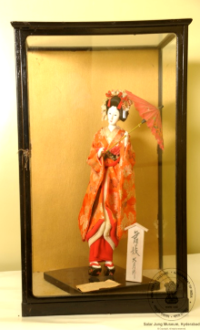

🔇 Is bhasha me is vastu ka audio abhi uplabdh nahi hai.
1. ACQ - 66 - 30: जापानी रबर का खिलौना

1. ACQ - 66 - 30
एक खड़ी जापानी महिला “माइको” की मूर्ति, जो दोनों हाथों में छतरी पकड़े हुए है। उसके सीने पर गुलाबी रंग की मोतियों की एक बेल्ट जैसी सजावट है। उसने फूलों से डिज़ाइन किया हुआ परिधान पहना है और उसके सिर से फूलों की सजावट लटक रही है। “माइको” का अर्थ है क्योटो की “प्रशिक्षु गीशा लड़की”। उन्हें जापानी नृत्य सीखना आवश्यक होता है, इसलिए उन्हें “माइको” कहा जाता है — जहाँ “माई” का अर्थ है “नृत्य” और “को” का अर्थ है “लड़की”। गीशा गुड़ियाएँ आकर्षक जापानी महिलाओं का प्रतीक हैं, जो नृत्य, गायन, बातचीत और अन्य कलाओं के माध्यम से मनोरंजन करती हैं। प्रत्येक जापानी गीशा गुड़िया की पोशाक रेशम से बड़ी बारीकी से बनाई जाती है और यह वास्तविक जापानी गीशाओं द्वारा पहने जाने वाले किमोनो जैसी दिखाई देती है। हमारी सभी जापानी गीशा गुड़ियाएँ एक काले लकड़ी के आधार पर खड़ी होती हैं, जिससे उनका रूप अत्यंत आकर्षक और उच्च गुणवत्ता वाला लगता है। इन गुड़ियाओं को जापान सरकार द्वारा मार्च 1966 में सालारजंग संग्रहालय को उपहार स्वरूप भेंट किया गया था।
1. ACQ - 66 - 30: Japanese Rubber Toy
1. ACQ - 66 - 30
A figure of a standing Japanese woman, a “Maiko”, holding an umbrella in both hands. Across her chest is a belt-like ornament of pink beads. She wears a garment patterned with flowers, and floral ornaments hang from her head. “Maiko” means an “apprentice geisha girl” of Kyoto. They are required to learn Japanese dance, which is why they are called “Maiko” — “mai” meaning “dance” and “ko” meaning “girl”. Geisha dolls represent the elegant Japanese women who entertain through dance, song, conversation and other arts. The costume of each Japanese geisha doll is made from silk with great care and resembles the kimono worn by real Japanese geisha. All our Japanese geisha dolls stand upon a black wooden base, which gives them a most attractive and high-quality appearance. These dolls were presented as a gift to the Salar Jung Museum by the Government of Japan in March 1966.
1. ACQ - 66 - 30: జపనీస్ రబ్బరు బొమ్మ
1. ACQ - 66 - 30
రెండు చేతులతో గొడుగు పట్టుకుని నిలబడి ఉన్న “మైకో” అనే జపనీస్ మహిళ ప్రతిమ. ఆమె ఛాతీపై గులాబీ రంగు పూసల బెల్టు వంటి అలంకరణ ఉంది. ఆమె పూల డిజైన్ ఉన్న వస్త్రం ధరించి ఉంది మరియు ఆమె తల నుండి పూల అలంకరణ వేలాడుతోంది. “మైకో” అంటే క్యోటోకు చెందిన “శిక్షణలో ఉన్న గీషా అమ్మాయి”. వారు జపనీస్ నృత్యం నేర్చుకోవడం తప్పనిసరి, అందుకే వారిని “మైకో” అంటారు — ఇక్కడ “మై” అంటే “నృత్యం”, “కో” అంటే “అమ్మాయి”. గీషా బొమ్మలు నృత్యం, గానం, సంభాషణ మరియు ఇతర కళల ద్వారా వినోదాన్ని అందించే అందమైన జపనీస్ మహిళలకు ప్రతీక. ప్రతి జపనీస్ గీషా బొమ్మ దుస్తులను పట్టుతో ఎంతో సూక్ష్మంగా తయారు చేస్తారు, అవి నిజమైన జపనీస్ గీషాలు ధరించే కిమోనోలా కనిపిస్తాయి. మా జపనీస్ గీషా బొమ్మలన్నీ నల్లని కలప పీఠంపై నిలబడి ఉంటాయి, దీనివల్ల వాటి రూపం అత్యంత ఆకర్షణీయంగా, ఉన్నత నాణ్యతతో కనిపిస్తుంది. ఈ బొమ్మలను జపాన్ ప్రభుత్వం మార్చి 1966లో సాలార్ జంగ్ మ్యూజియంకు బహుమతిగా అందించింది.
1. اے سی کیو-66-30: جاپانیربڑکاکھلونا
1. اے سی کیو-66-30
یہ ایک کھڑی ہوئی جاپانی خاتونمایکوکا مجسمہ ہے جو دونوں ہاتھوں میں چھتری تھامے ہوئی ہے۔ اس کے سینے پر گلابی رنگ کے موتیوں کی مالا ہے جو بیلٹ کی مانند دکھائی دیتی ہے۔ مایکو نے پھولوں کے نقش و نگار والا لباس پہنا ہوا ہے اور سر پر پھول لٹک رہے ہیں۔مائیکو دراصل کیوٹو میں گیشا بننے والی طالبہ لڑکیوں کو کہا جاتا ہے۔ انہیں جاپانی رقص سیکھنا ضروری ہوتا ہے، اسی وجہ سے انہیں مایکو کہا جاتا ہے۔مائی کا مطلب رقص اور کو کا مطلب لڑکی ہے۔گیوشا کے گڑیا نما مجسمے جاپان کی خوبصورت خواتین کی نمائندگی کرتے ہیں، جو رقص گائیکیگفتگو اور دیگر صلاحیتوں کے ذریعے تفریح فراہم کرتی ہیں۔ ہر جاپانی گیوشا گڑیا کا لباس ریشم سے نہایت باریک کاریگری کے ساتھ تیار کیا جاتا ہے اور یہ حقیقی جاپانی گیوشا کے کیمونو جیسا دکھائی دیتا ہے۔تمام جاپانی گیوشا گڑیا سیاہ لکڑی کے چبوترے پر نصب کیے گئے ہیں تاکہ اعلیٰ معیار کی خوبصورتی سامنے آئے۔یہ گڑیا جاپانی حکومت کی جانب سے سالار جنگ میوزیم کو مارچ 1966 میں تحفے میں دیے گئے تھے۔
2. سی ایس-I-303: چوہا پرسوار گنیش جی
یہ بھگوان گنیش کا چینی مٹی سے تیار کیا گیا مجسمہ ہے، جو چار ہاتھوں والا ہے ۔ اس کا اوپری لباس سرخ رنگ کا ہے۔یہ مجسمہ ہندوستان میں تیار کیا گیا اور بیسویں صدی سے تعلق رکھتا ہے۔گنیشجی کو عام طور پر چوہے پر سوار دکھایا جاتا ہے، جو ان کی سواری ہے۔ چوہابےچینذہن خواہشات اور پیچیدہ حالات میں قابو پانے کی صلاحیت کی علامت ہے۔ گنیش جی کا چوہے پر سوار ہونا یہ ظاہر کرتا ہے کہ وہ منفی توانائی کو مثبت میں تبدیل کرنے کی صلاحیت رکھتے ہیں۔گنیشجی ہندو مذہب میں ہاتھی سر والے دیوتا ہیں۔ وہ بھگوان شیو اور دیوی پاروتی کے بیٹے ہیں۔گنیش جیہندو مذہب کے نہایت مقبول اور کثرت سے پوجے جانے والے دیوتاؤں میں شمار ہوتے ہیں۔ ہندو روایت کے مطابق گنیش کو دانائی دولت کامیابی اور خوش بختی کا دیوتا مانا جاتا ہے۔
3. سی ایس-I-305: پدمسمبھوا
یہ تاج پہنی ہوئی دیوی پدمسمبھوا کا رنگین چینی مٹی سے بنا ہوا مجسمہ ہے، جو کمل کے پھول پر بیٹھی ہوئی ہیں اور ان کے دس بازو ہیں۔ یہ پیکر ڈھال کر تیار کیا گیا ہے جس میں دس ہاتھ مختلف علامتی اشیا تھامے ہوئے دکھائے گئے ہیں۔ انہوں نے شوخ رنگوں کے آرام دہ اور دلکش لباس زیب تن کی ہوئی ہیں، اور یہ مجسمہ لہروں کے اوپر بنائے گئے کمل نما چبوترے پر نصب ہے۔ یہ بدھ مت کے تانترک مکتبفکر کی ایک نمایاں اور باوقار شخصیت سمجھی جاتی ہیں، جو اپنی روحانی مہارت اور تانترک عبادات و رسوم کے باعث شہرت رکھتے ہیں۔ تبتی بدھ مت میں انہیں نہایت عقیدت کے ساتھ یاد کیا جاتا ہے اور اکثر تبت میں بدھ مت کی بنیاد رکھنے والی عظیم شخصیات میں شمار کی جاتی ہیں ۔ کہا جاتا ہے کہ یہ کمل کے پھول سے پیدا ہوئی، جو بدھ مت کے فن و ادب میں ایک معروف اور مقدس علامت ہے۔ تبت کی ثقافت میں ان کی حیثیت مرکزی ہے اور انہیں مجسموں مصوری اور فنون لطیفہ کی دیگر صورتوں میں کثرت سے پیش کیا جاتا ہے
4سی ایس-I-812: بونا کا مجسمہ
یہ مجسمہ سات بونوں میں سے ایک کردار ڈاک کا ہے جو درخت کے تنے پر بیٹھا ہوا ہے۔ اس کا بایاں ہاتھ کمر پر ہے۔ اس نے سبز رنگ کی ٹوپیسفید قمیص اور سیاہ جوتے پہن رکھے ہیں۔ کمر پر سیاہ بیلٹ ہے ۔ سات بونے ڈزنی کی مشہور متحرک فلم “اسنو وائٹ اینڈ دی سیون ڈوارفس” کے کردار ہیں۔ ان کے نام یہ ہیں ڈاک گرَمپیبےشفول ، سلیپی، اسنیزی، ہیپی اور ڈوپی ۔ ہر ایک کی شخصیت منفرد ہے۔ یہ سب ایک چھوٹے سے کاٹیج میں رہتے ہیں اور ہیروں کی کان میں کام کرتے ہیں۔ وہ اپنی مہربانی اور اسنو وائٹ کو اپنے گھر میں خوش آمدید کہنے کے لیے جانے جاتے ہیں۔ ڈاک اس گروہ کا رہنما ہے اور ذہین و دانا سمجھا جاتا ہے۔ گرَمپی سب سے زیادہ چڑچڑا ہے۔ بیشفل نہایت شرمیلا اور قدرے رومانوی مزاج رکھتا ہے۔ سلیپی ہمیشہ تھکا ہوا محسوس ہوتا ہے۔ سنیزی کا نام اس کی عادت کی طرف اشارہ کرتا ہے۔ ہیپی سب سے زیادہ خوش مزاج اور ہنس مکھ ہے۔ ڈوپی سب سے کم عمر بھولا بھالا گونگا اور بغیر داڑھی کے دکھایا جاتا ہے۔ یہ مجسمہ جرمنی سے تعلق رکھتا ہے اور بیسویں صدی کا ہے۔
5. سی ایس-II-656: کشتی
سنہری ملمع کاری سے مزین جنگی جہاز کا ایک چھوٹا ماڈل، جس میں تین ستون دو سپاہی پانچ توپیں اور چار رڈر موجود ہیں۔ دوسری جانب تین نقاب نما شکلیں بنی ہوئی ہیں۔ ایک سرے پر جھنڈےاور علامتی پرچم نصب ہیں، جبکہ چار تمغہ نما دائروں میں چینی تحریر ہیں۔ یہ جہاز خوب صورت نقش و نگار سے آراستہ لکڑی کے تراشیدہ چبوترے پر نصب ہے۔ اس طرز کے جنگی جہاز چینی روایتی بادبانی کشتیوں کی ایک قسم سے تعلق رکھتے ہیں۔ ان کی نمایاں خصوصیات میں ہموار اور چپٹی تہہ درمیانی مرکزی رڈر اور عموماً سیدھا پچھلا حصہ شامل ہے۔ یہ جہاز عموماً سامان کی نقل و حمل تفریحی سفر اور دریاؤں یا ساحلی علاقوں میں رہائشی کشتیوں کے طور پر بھی استعمال ہوتے رہے ہیں۔ انہیں خاص طور پر دریائی سفر بین الاقوامی تجارت سمندری مہمات اور یہاں تک کہ بحری جنگوں کے لیے بھی تیار کیا جاتا تھا۔ آج بھی ایشیا کے مختلف علاقوں میں اس طرز کی کشتیاں ماہی گیری تجارت اور سیاحت کے لیے استعمال کی جاتی ہیں۔ یہ مختصر جنگی جہاز چاندی سے تیار کیا گیا ہے۔ یہ چینی طرز کا ماڈل جنگی جہاز بیسویں صدی سے تعلق رکھتا ہے۔
6. سی ایس-IV-346: مختصر ساز
یہ ساز کا ایک مختصر نمونہ ہے جس میں چھ تاریں لگی ہوئی ہیں۔ ساز کیباڈی کے کناروں پر ہاتھی دانت کی تزئین کی گئی ہے ، اور سامنے کی چھڑی کے اوپر ہاتھی دانت کا پرندہ نصب ہے جبکہ پیچھے پر ہاتھی دانت سے تراشا گیا پرندے کا سر موجود ہے۔سازکیباڈیگہرے زرد مائل اور سرخی مائل بھورے رنگ کے مڑھے ہوئے پلاسٹک شیٹ سے ڈھکا ہوا ہے۔ یہ آلہ صوتی تاروں سے آواز پیدا کرتا ہے، جو عموماً نائلوناسٹیل یا کبھی کبھار آنتوں کے بنے ہوتے ہیں۔ عموماً تاروں کو انگلیوں سے چھیڑ کر بجایا جاتا ہے، جبکہ بعض اوقات کمان کے ذریعے بھی ان پر حرکت دی جاتی ہے۔ موسیقار اپنی مہارت کے مطابق مختلف انداز اختیار کرتے ہیں۔ یہ مختصر ساز ہاتھی دانت اور لکڑی سے تیار کیا گیا ہے۔ اس کا تعلق یورپ سے ہے اور یہ بیسویں صدی کا ہے۔
7. سی ایس-IV-531: عدالتی منظر
یہ لکڑی پر تراشا گیا ایک عدالت کا منظر ہے۔ ایک افسر کرسی پر بیٹھا ہے اور اس کے سامنے میز رکھی ہے۔ اس کے دونوں جانب ایک ایک ماتحت موجود ہے، جبکہ چار محافظ پہرہ دے رہے ہیں۔ افسر کے سامنے دو ملزمان کھڑے ہیں؛ ایک کے گردن میں لکڑی کا طوق ڈالا گیا ہے اور دوسرے کے دونوں ہاتھوں میں لکڑی کی بیڑیاں ہیں۔ اس کی ابتدا چین سے ہوئی اور یہ بیسویں صدی سے تعلق رکھتا ہے۔ لکڑی پر کی گئی نقش و نگاری کا ایک مجموعہ چینی مذہبی عقائد کی عکاسی کرتا ہے۔ ہندوستانی عقیدے کے مطابق بھی جو لوگ انسانوں اور جانوروں کے ساتھ نیکی کرتے ہیں، انہیں مرنے کے بعد جنت نصیب ہوتی ہے، اور جو برے اعمال کرتے ہیں انہیں جہنم میں سزا دی جاتی ہے۔ مجرموں کو ان کے مختلف گناہوں کے مطابق جہنم میں طرح طرح کی سزائیں بھگتتے ہوئے دکھایا گیا ہے۔
2. سی ایس-I-303: چوہا پرسوار گنیش جی
یہ بھگوان گنیش کا چینی مٹی سے تیار کیا گیا مجسمہ ہے، جو چار ہاتھوں والا ہے ۔ اس کا اوپری لباس سرخ رنگ کا ہے۔یہ مجسمہ ہندوستان میں تیار کیا گیا اور بیسویں صدی سے تعلق رکھتا ہے۔گنیشجی کو عام طور پر چوہے پر سوار دکھایا جاتا ہے، جو ان کی سواری ہے۔ چوہابےچینذہن خواہشات اور پیچیدہ حالات میں قابو پانے کی صلاحیت کی علامت ہے۔ گنیش جی کا چوہے پر سوار ہونا یہ ظاہر کرتا ہے کہ وہ منفی توانائی کو مثبت میں تبدیل کرنے کی صلاحیت رکھتے ہیں۔گنیشجی ہندو مذہب میں ہاتھی سر والے دیوتا ہیں۔ وہ بھگوان شیو اور دیوی پاروتی کے بیٹے ہیں۔گنیش جیہندو مذہب کے نہایت مقبول اور کثرت سے پوجے جانے والے دیوتاؤں میں شمار ہوتے ہیں۔ ہندو روایت کے مطابق گنیش کو دانائی دولت کامیابی اور خوش بختی کا دیوتا مانا جاتا ہے۔
3. سی ایس-I-305: پدمسمبھوا
یہ تاج پہنی ہوئی دیوی پدمسمبھوا کا رنگین چینی مٹی سے بنا ہوا مجسمہ ہے، جو کمل کے پھول پر بیٹھی ہوئی ہیں اور ان کے دس بازو ہیں۔ یہ پیکر ڈھال کر تیار کیا گیا ہے جس میں دس ہاتھ مختلف علامتی اشیا تھامے ہوئے دکھائے گئے ہیں۔ انہوں نے شوخ رنگوں کے آرام دہ اور دلکش لباس زیب تن کی ہوئی ہیں، اور یہ مجسمہ لہروں کے اوپر بنائے گئے کمل نما چبوترے پر نصب ہے۔ یہ بدھ مت کے تانترک مکتبفکر کی ایک نمایاں اور باوقار شخصیت سمجھی جاتی ہیں، جو اپنی روحانی مہارت اور تانترک عبادات و رسوم کے باعث شہرت رکھتے ہیں۔ تبتی بدھ مت میں انہیں نہایت عقیدت کے ساتھ یاد کیا جاتا ہے اور اکثر تبت میں بدھ مت کی بنیاد رکھنے والی عظیم شخصیات میں شمار کی جاتی ہیں ۔ کہا جاتا ہے کہ یہ کمل کے پھول سے پیدا ہوئی، جو بدھ مت کے فن و ادب میں ایک معروف اور مقدس علامت ہے۔ تبت کی ثقافت میں ان کی حیثیت مرکزی ہے اور انہیں مجسموں مصوری اور فنون لطیفہ کی دیگر صورتوں میں کثرت سے پیش کیا جاتا ہے
4سی ایس-I-812: بونا کا مجسمہ
یہ مجسمہ سات بونوں میں سے ایک کردار ڈاک کا ہے جو درخت کے تنے پر بیٹھا ہوا ہے۔ اس کا بایاں ہاتھ کمر پر ہے۔ اس نے سبز رنگ کی ٹوپیسفید قمیص اور سیاہ جوتے پہن رکھے ہیں۔ کمر پر سیاہ بیلٹ ہے ۔ سات بونے ڈزنی کی مشہور متحرک فلم “اسنو وائٹ اینڈ دی سیون ڈوارفس” کے کردار ہیں۔ ان کے نام یہ ہیں ڈاک گرَمپیبےشفول ، سلیپی، اسنیزی، ہیپی اور ڈوپی ۔ ہر ایک کی شخصیت منفرد ہے۔ یہ سب ایک چھوٹے سے کاٹیج میں رہتے ہیں اور ہیروں کی کان میں کام کرتے ہیں۔ وہ اپنی مہربانی اور اسنو وائٹ کو اپنے گھر میں خوش آمدید کہنے کے لیے جانے جاتے ہیں۔ ڈاک اس گروہ کا رہنما ہے اور ذہین و دانا سمجھا جاتا ہے۔ گرَمپی سب سے زیادہ چڑچڑا ہے۔ بیشفل نہایت شرمیلا اور قدرے رومانوی مزاج رکھتا ہے۔ سلیپی ہمیشہ تھکا ہوا محسوس ہوتا ہے۔ سنیزی کا نام اس کی عادت کی طرف اشارہ کرتا ہے۔ ہیپی سب سے زیادہ خوش مزاج اور ہنس مکھ ہے۔ ڈوپی سب سے کم عمر بھولا بھالا گونگا اور بغیر داڑھی کے دکھایا جاتا ہے۔ یہ مجسمہ جرمنی سے تعلق رکھتا ہے اور بیسویں صدی کا ہے۔
5. سی ایس-II-656: کشتی
سنہری ملمع کاری سے مزین جنگی جہاز کا ایک چھوٹا ماڈل، جس میں تین ستون دو سپاہی پانچ توپیں اور چار رڈر موجود ہیں۔ دوسری جانب تین نقاب نما شکلیں بنی ہوئی ہیں۔ ایک سرے پر جھنڈےاور علامتی پرچم نصب ہیں، جبکہ چار تمغہ نما دائروں میں چینی تحریر ہیں۔ یہ جہاز خوب صورت نقش و نگار سے آراستہ لکڑی کے تراشیدہ چبوترے پر نصب ہے۔ اس طرز کے جنگی جہاز چینی روایتی بادبانی کشتیوں کی ایک قسم سے تعلق رکھتے ہیں۔ ان کی نمایاں خصوصیات میں ہموار اور چپٹی تہہ درمیانی مرکزی رڈر اور عموماً سیدھا پچھلا حصہ شامل ہے۔ یہ جہاز عموماً سامان کی نقل و حمل تفریحی سفر اور دریاؤں یا ساحلی علاقوں میں رہائشی کشتیوں کے طور پر بھی استعمال ہوتے رہے ہیں۔ انہیں خاص طور پر دریائی سفر بین الاقوامی تجارت سمندری مہمات اور یہاں تک کہ بحری جنگوں کے لیے بھی تیار کیا جاتا تھا۔ آج بھی ایشیا کے مختلف علاقوں میں اس طرز کی کشتیاں ماہی گیری تجارت اور سیاحت کے لیے استعمال کی جاتی ہیں۔ یہ مختصر جنگی جہاز چاندی سے تیار کیا گیا ہے۔ یہ چینی طرز کا ماڈل جنگی جہاز بیسویں صدی سے تعلق رکھتا ہے۔
6. سی ایس-IV-346: مختصر ساز
یہ ساز کا ایک مختصر نمونہ ہے جس میں چھ تاریں لگی ہوئی ہیں۔ ساز کیباڈی کے کناروں پر ہاتھی دانت کی تزئین کی گئی ہے ، اور سامنے کی چھڑی کے اوپر ہاتھی دانت کا پرندہ نصب ہے جبکہ پیچھے پر ہاتھی دانت سے تراشا گیا پرندے کا سر موجود ہے۔سازکیباڈیگہرے زرد مائل اور سرخی مائل بھورے رنگ کے مڑھے ہوئے پلاسٹک شیٹ سے ڈھکا ہوا ہے۔ یہ آلہ صوتی تاروں سے آواز پیدا کرتا ہے، جو عموماً نائلوناسٹیل یا کبھی کبھار آنتوں کے بنے ہوتے ہیں۔ عموماً تاروں کو انگلیوں سے چھیڑ کر بجایا جاتا ہے، جبکہ بعض اوقات کمان کے ذریعے بھی ان پر حرکت دی جاتی ہے۔ موسیقار اپنی مہارت کے مطابق مختلف انداز اختیار کرتے ہیں۔ یہ مختصر ساز ہاتھی دانت اور لکڑی سے تیار کیا گیا ہے۔ اس کا تعلق یورپ سے ہے اور یہ بیسویں صدی کا ہے۔
7. سی ایس-IV-531: عدالتی منظر
یہ لکڑی پر تراشا گیا ایک عدالت کا منظر ہے۔ ایک افسر کرسی پر بیٹھا ہے اور اس کے سامنے میز رکھی ہے۔ اس کے دونوں جانب ایک ایک ماتحت موجود ہے، جبکہ چار محافظ پہرہ دے رہے ہیں۔ افسر کے سامنے دو ملزمان کھڑے ہیں؛ ایک کے گردن میں لکڑی کا طوق ڈالا گیا ہے اور دوسرے کے دونوں ہاتھوں میں لکڑی کی بیڑیاں ہیں۔ اس کی ابتدا چین سے ہوئی اور یہ بیسویں صدی سے تعلق رکھتا ہے۔ لکڑی پر کی گئی نقش و نگاری کا ایک مجموعہ چینی مذہبی عقائد کی عکاسی کرتا ہے۔ ہندوستانی عقیدے کے مطابق بھی جو لوگ انسانوں اور جانوروں کے ساتھ نیکی کرتے ہیں، انہیں مرنے کے بعد جنت نصیب ہوتی ہے، اور جو برے اعمال کرتے ہیں انہیں جہنم میں سزا دی جاتی ہے۔ مجرموں کو ان کے مختلف گناہوں کے مطابق جہنم میں طرح طرح کی سزائیں بھگتتے ہوئے دکھایا گیا ہے۔
1. ACQ - 66 - 30: জাপানি খেলনা
1. ACQ - 66 - 30
মাইকো" নামক এক দণ্ডায়মান জাপানি মহিলার মূর্তি, যিনি দুই হাতে একটি ছাতা ধরে আছেন। বুকের কাছে বেল্টের মতো গোলাপি রঙের পুঁতির কাজ রয়েছে। তিনি ফুলকাটা নকশা করা পোশাক পড়ে আছেন এবং তাঁর মাথা থেকে ফুল ঝুলে আছে। "মাইকো" বলতে কিয়োটোর প্রশিক্ষণার্থী গিশা মেয়েদের বোঝায়। তাদের জাপানি নাচ শিখতে হয় বলেই তাদের মাইকো বলা হয়; কারণ "মাই" মানে নাচ এবং "কো" মানে মেয়ে। গিশা পুতুলগুলি হলো আকর্ষণীয় জাপানি নারী, যারা নাচ, গান, কথোপকথন এবং অন্যান্য প্রতিভার মাধ্যমে মানুষের বিনোদন করে থাকেন। প্রতিটি জাপানি গিশা পুতুলের পোশাক রেশম সিল্ক দিয়ে নিখুঁতভাবে তৈরি এবং এটি দেখতে আসল জাপানি গিশাদের পরা কিমোনোর মতোই। শৈল্পিক উৎকর্ষ ফুটিয়ে তুলতে আমাদের প্রতিটি গিশা পুতুলকে একটি মসৃণ কালো কাঠের বেদির ওপর বসানো রয়েছে। এই পুতুলগুলি ১৯৬৬ সালের মার্চ মাসে জাপান সরকার কর্তৃক সালার জং মিউজিয়ামকে উপহার হিসেবে দেওয়া হয়েছিল।
1. ACQ-66-30: જાપાનીઝ રબર-રમકડું
1. ACQ-66-30
ઉભેલી જાપાની સ્ત્રી “માઇકો”ની પ્રતિમા, જેણે બંને હાથમાં છત્રી પકડી રાખી છે. છાતી પર ગુલાબી રંગની મણિયાની પટ્ટી (બેલ્ટ) જેવી શોભા છે. ફૂલોના આકારવાળું વસ્ત્ર પરિધાન કર્યા છે અને માથેથી લટકતા ફૂલોની સજાવટ છે. “માઇકો”નો અર્થ ક્યોટોમાં શિક્ષાર્થી ગેશા યુવતી થાય છે. તેમને જાપાની નૃત્યો શીખવા ફરજિયાત હોય છે, તેથી તેમને “માઇકો” કહેવામાં આવે છે — કારણ કે “માઇ” એટલે નૃત્ય અને “કો” એટલે છોકરી. ગેશા ગુડિયા એવી આકર્ષક જાપાની સ્ત્રીઓનું પ્રતિનિધિત્વ કરે છે જે નૃત્ય, ગીત, સંવાદ અને અન્ય પ્રતિભા દ્વારા મનોરંજન આપે છે. દરેક જાપાની ગેશા ગુડિયાનું વસ્ત્ર રેશમથી સુંદર રીતે બનાવવામાં આવ્યું છે અને તે ખરેખર જાપાની ગેશાઓ દ્વારા પહેરાતી અસલી કિમોનો જેવી લાગે છે. અમારી (અહીની) તમામ જાપાની ગેશા ગુડિયાઓને ઊંચી ગુણવત્તા આપવા માટે કાળા લાકડાના તખ્તા પર ઉભી રાખવામાં આવી છે. આ ગુડિયાઓ જાપાન સરકારે માર્ચ 1966માં સલાર જંગ સંગ્રહાલયને ભેટ તરીકે આપી હતી.
1. ACQ-66-30: ಜಪಾನೀಸ್ರಬ್ಬರ್ ಟಾಯ್
1. ACQ-66-30
ಎರಡೂ ಕೈಗಳಲ್ಲಿ ಛತ್ರಿಯನ್ನು ಹಿಡಿದು ನಿಂತಿರುವ ಜಪಾನೀಸ್ ಮಹಿಳೆ "ಮೈಕೊ" ರೂಪದ ಈ ಸುಂದರ ಶಿಲ್ಪ ಕಲಾಕೃತಿಯು, ಎದೆಯ ಮೇಲೆ ಗುಲಾಬಿ ಬಣ್ಣದ ಮಣಿಗಳ ಪಟ್ಟಿಯನ್ನು ಹೊಂದಿದೆ. ಆಕೆ ಹೂವಿನ ವಿನ್ಯಾಸವಿರುವ ಅತ್ಯಾಕರ್ಷಕ ಉಡುಪನ್ನು ಧರಿಸಿದ್ದಾಳೆ ಮತ್ತು ಆಕೆಯ ತಲೆಯಮೇಲಿನಿಂದ ಹೂವುಗಳು ನೇತಾಡುತ್ತಿವೆ. ಕ್ಯೋಟೋ ನಗರದಲ್ಲಿ 'ಗೀಶಾ' ಕಲೆಯ ತರಬೇತಿ ಪಡೆಯುತ್ತಿರುವ ಯುವತಿಯನ್ನು "ಮೈಕೊ" ಎಂದು ಕರೆಯಲಾಗುತ್ತದೆ. ಅವರು ಕಡ್ಡಾಯವಾಗಿ ಜಪಾನೀಸ್ ನೃತ್ಯಗಳನ್ನು ಕಲಿಯಬೇಕಾಗಿರುವುದರಿಂದ ಅವರನ್ನು 'ಮೈಕೊ' ಎಂದು ಕರೆಯಲಾಗುತ್ತದೆ; ಏಕೆಂದರೆ ಜಪಾನೀಸ್ ಭಾಷೆಯಲ್ಲಿ "ಮೈ" ಎಂದರೆ 'ನೃತ್ಯ' ಮತ್ತು "ಕೊ" ಎಂದರೆ 'ಹುಡುಗಿ' ಎಂದರ್ಥ. ಗೀಶಾ ಗೊಂಬೆಗಳು ಆಕರ್ಷಕ ಜಪಾನೀಸ್ ಮಹಿಳೆಯರ ಪ್ರತಿಕೃತಿಗಳಾಗಿದ್ದು, ನಿಜವಾದ ಗೀಶಾಗಳು ನೃತ್ಯ, ಹಾಡುಗಾರಿಕೆ, ಸಂಭಾಷಣೆ ಮತ್ತು ಇತರ ಪ್ರತಿಭೆಗಳಂತಹ ವಿವಿಧ ಕಲೆಗಳ ಮೂಲಕ ಜನರಿಗೆ ಮನರಂಜನೆ ನೀಡುತ್ತಾರೆ. ಪ್ರತಿಯೊಂದು ಜಪಾನೀಸ್ ಗೀಶಾ ಗೊಂಬೆಯ ಉಡುಪನ್ನು ರೇಷ್ಮೆಯಿಂದ ಅತ್ಯಂತ ನಾಜೂಕಾಗಿ ತಯಾರಿಸಲಾಗುತ್ತದೆ ಮತ್ತು ಇದು ನಿಜವಾದ ಜಪಾನೀಸ್ ಗೀಶಾಗಳು ಧರಿಸುವ ಅಸಲಿ 'ಕಿಮೋನೊ' ಉಡುಪಿನಂತೆಯೇ ಕಾಣುತ್ತದೆ. ಭವ್ಯವಾದ ನೋಟವನ್ನು ನೀಡುವುದಕ್ಕಾಗಿ ನಮ್ಮ ಎಲ್ಲಾ ಜಪಾನೀಸ್ ಗೀಶಾ ಗೊಂಬೆಗಳನ್ನು ಕಪ್ಪು ಬಣ್ಣದ ಮರದ ಪೀಠದ ಮೇಲೆ ನಿಲ್ಲಿಸಲಾಗಿದೆ. ಮಾರ್ಚ್ 1966 ರಲ್ಲಿ ಜಪಾನ್ ಸರ್ಕಾರವು ಈ ಗೊಂಬೆಗಳನ್ನು ಹೈದರಾಬಾದ್ನ ಸಾಲಾರ್ ಜಂಗ್ ವಸ್ತುಸಂಗ್ರಹಾಲಯಕ್ಕೆ ಉಡುಗೊರೆಯಾಗಿ ನೀಡಿದೆ.
1. ACQ - 66 - 30: ଜାପାନୀ ରବର ଖେଳଣା
1. ACQ - 66 - 30
ଦୁଇ ହାତରେ ଛତା ଧରି ଠିଆ ହୋଇଥିବା ଜଣେ ଜାପାନୀ ମହିଳା "ମାଇକୋ" ପ୍ରତିମୂର୍ତ୍ତି। ଛାତିରେ ଗୋଲାପୀ ମୁକ୍ତା ପରି ଏକ ବେଲ୍ଟ। ମୁଣ୍ଡରେ ଫୁଲ ଝୁଲୁଥିବା ଏକ ଫୁଲ-ଡିଜାଇନ୍ ଡ୍ରେସ୍। "ମାଇକୋ" ଅର୍ଥ କ୍ୟୋଟୋରେ ଶିକ୍ଷାର୍ଥୀ ଗିଶା ଝିଅ। ସେମାନଙ୍କୁ ଜାପାନୀ ନୃତ୍ୟ ଶିଖିବାକୁ ପଡ଼ିଥାଏ, ତେଣୁ ସେମାନଙ୍କୁ "ମାଇକୋ" କୁହାଯାଏ କାରଣ "ମାଇ" ଅର୍ଥ ନୃତ୍ୟ ଏବଂ "କୋ" ଅର୍ଥ ଝିଅ। ଗିଶା ପୁତଳିମାନେ ହେଉଛନ୍ତି ଆକର୍ଷଣୀୟ ଜାପାନୀ ମହିଳା ଯେଉଁମାନେ ନାଚ, ଗୀତ ଗାଇବା, କଥାବାର୍ତ୍ତା ଏବଂ ଅନ୍ୟାନ୍ୟ କଳା ଭଳି ବିଭିନ୍ନ ମାଧ୍ୟମରେ ମନୋରଞ୍ଜନ କରନ୍ତି। ପ୍ରତ୍ୟେକ ଜାପାନୀ ଗିଶା ପୁତଳିର ପୋଷାକ ସୁନ୍ଦର ଭାବରେ ରେଶମରୁ ତିଆରି ଏବଂ ପ୍ରକୃତ ଜାପାନୀ ଗିଶାମାନଙ୍କ ଦ୍ୱାରା ପିନ୍ଧାଯାଉଥିବା ପ୍ରାମାଣିକ କିମୋନୋ ସହିତ ସଦୃଶ। ଆମର ସମସ୍ତ ଜାପାନୀ ଗିଶା ପୁତଳି ଉଚ୍ଚମାନର ଦୃଶ୍ୟ ପାଇଁ ଏକ କଳା କାଠ ଆଧାର ଉପରେ ଠିଆ ହୋଇଛି। ଏହି ପୁତଳିଗୁଡ଼ିକୁ ଜାପାନ ସରକାର ମାର୍ଚ୍ଚ 1966 ରେ ସାଲାର ଜଙ୍ଗ ସଂଗ୍ରହାଳୟକୁ ଉପହାର ଦେଇଥିଲେ।
1. ACQ - 66 - 30: जपानी रबरी खेळणे
1. ACQ - 66 - 30
दोन्ही हातांत छत्री धरून उभी असलेल्या “माइको” या जपानी स्त्रीची मूर्ती. तिच्या छातीवर गुलाबी मण्यांची पट्ट्यासारखी सजावट आहे. तिने फुलांची नक्षी असलेला पोशाख घातला असून तिच्या डोक्यावरून फुलांची सजावट लोंबत आहे. “माइको” म्हणजे क्योटोमधील “शिकाऊ गेइशा मुलगी”. त्यांना जपानी नृत्य शिकणे आवश्यक असते, म्हणून त्यांना “माइको” म्हणतात — जिथे “माई” म्हणजे “नृत्य” आणि “को” म्हणजे “मुलगी”. गेइशा बाहुल्या या नृत्य, गायन, संभाषण आणि इतर कलांद्वारे मनोरंजन करणाऱ्या आकर्षक जपानी स्त्रियांचे प्रतीक आहेत. प्रत्येक जपानी गेइशा बाहुलीचा पोशाख रेशमापासून अत्यंत बारकाईने बनवला जातो आणि तो खऱ्या जपानी गेइशांनी परिधान केलेल्या किमोनोसारखा दिसतो. आमच्या सर्व जपानी गेइशा बाहुल्या काळ्या लाकडी आधारावर उभ्या असतात, ज्यामुळे त्यांचे रूप अत्यंत आकर्षक आणि उच्च दर्जाचे भासते. या बाहुल्या जपान सरकारने मार्च १९६६ मध्ये सालारजंग संग्रहालयाला भेट म्हणून दिल्या होत्या.
1. ACQ - 66 - 30: ജപ്പാനീസ്റബ്ബർ ടോയ്
1. ACQ - 66 - 30
നിൽക്കുന്നരൂപത്തിലുള്ളഒരുജാപ്പനീസ്യുവതിയുടെരൂപം - "മൈക്കോ" .ഇരുകൈകൾ കൊണ്ടുംഒരുകുടപിടിച്ചിരിക്കുന്ന ഈ രൂപത്തിന്റെനെഞ്ചിൽപിങ്ക്നിറത്തിലുള്ളമുത്തുകൾ കൊണ്ടുള്ളബെൽറ്റ്പോലെയുള്ളഅലങ്കാരമുണ്ട്. പൂക്കളുടെചിത്രങ്ങളുള്ളവസ്ത്രവുംതലയിൽ നിന്ന്തൂങ്ങിക്കിടക്കുന്നപൂക്കളുംഇതിന്റെസവിശേഷതയാണ്.
ക്യോട്ടോയിലെഗെയ്ഷആകാൻ പഠിക്കുന്നപെൺകുട്ടികളെയാണ് "മൈക്കോ" എന്ന്വിളിക്കുന്നത്. ഇവർ ജാപ്പനീസ്നൃത്തങ്ങൾ നിർബന്ധമായുംപഠിച്ചിരിക്കണം. "മൈ" എന്നാൽ നൃത്തംഎന്നും"കോ" എന്നാൽ പെൺകുട്ടിഎന്നുമാണ്അർത്ഥം. നൃത്തം, സംഗീതം, സംഭാഷണംഎന്നിവയിലൂടെയുംമറ്റ്കഴിവുകളിലൂടെയുംആളുകളെവിനോദിപ്പിക്കുന്നആകർഷകമായജാപ്പനീസ്സ്ത്രീകളാണ്ഗെയ്ഷകൾ. ഓരോഗെയ്ഷപാവകളുടെയുംവസ്ത്രങ്ങൾ പട്ടുനൂൽ കൊണ്ട്അതീവസൂക്ഷ്മതയോടെനിർമ്മിച്ചവയാണ്; ഇത്യഥാർത്ഥഗെയ്ഷകൾ ധരിക്കുന്ന 'കിമോണോ' പോലെതന്നെയിരിക്കും. ഉയർന്നഗുണമേന്മയുള്ളലുക്കിനായി ഈ ജാപ്പനീസ്പാവകളെകറുത്തമരപ്പീഠത്തിലാണ്ഉറപ്പിച്ചിരിക്കുന്നത്. 1966 മാർച്ചിൽ ജാപ്പനീസ്ഗവൺമെന്റ്ഹൈദരാബാദിലെസാലാർ ജംഗ്മ്യൂസിയത്തിന്സമ്മാനമായിനൽകിയതാണ് ഈ പാവകൾ.
ക്യോട്ടോയിലെഗെയ്ഷആകാൻ പഠിക്കുന്നപെൺകുട്ടികളെയാണ് "മൈക്കോ" എന്ന്വിളിക്കുന്നത്. ഇവർ ജാപ്പനീസ്നൃത്തങ്ങൾ നിർബന്ധമായുംപഠിച്ചിരിക്കണം. "മൈ" എന്നാൽ നൃത്തംഎന്നും"കോ" എന്നാൽ പെൺകുട്ടിഎന്നുമാണ്അർത്ഥം. നൃത്തം, സംഗീതം, സംഭാഷണംഎന്നിവയിലൂടെയുംമറ്റ്കഴിവുകളിലൂടെയുംആളുകളെവിനോദിപ്പിക്കുന്നആകർഷകമായജാപ്പനീസ്സ്ത്രീകളാണ്ഗെയ്ഷകൾ. ഓരോഗെയ്ഷപാവകളുടെയുംവസ്ത്രങ്ങൾ പട്ടുനൂൽ കൊണ്ട്അതീവസൂക്ഷ്മതയോടെനിർമ്മിച്ചവയാണ്; ഇത്യഥാർത്ഥഗെയ്ഷകൾ ധരിക്കുന്ന 'കിമോണോ' പോലെതന്നെയിരിക്കും. ഉയർന്നഗുണമേന്മയുള്ളലുക്കിനായി ഈ ജാപ്പനീസ്പാവകളെകറുത്തമരപ്പീഠത്തിലാണ്ഉറപ്പിച്ചിരിക്കുന്നത്. 1966 മാർച്ചിൽ ജാപ്പനീസ്ഗവൺമെന്റ്ഹൈദരാബാദിലെസാലാർ ജംഗ്മ്യൂസിയത്തിന്സമ്മാനമായിനൽകിയതാണ് ഈ പാവകൾ.